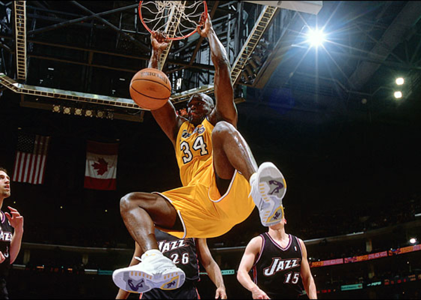
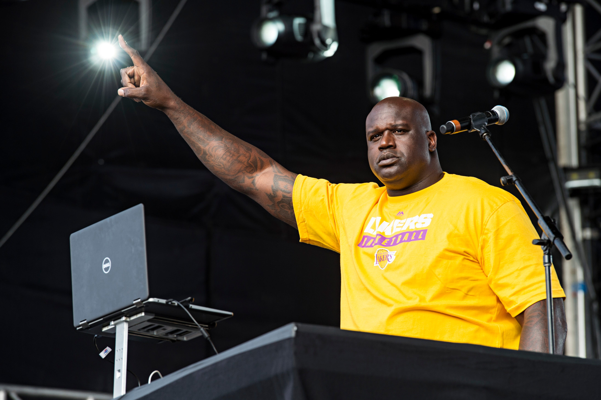
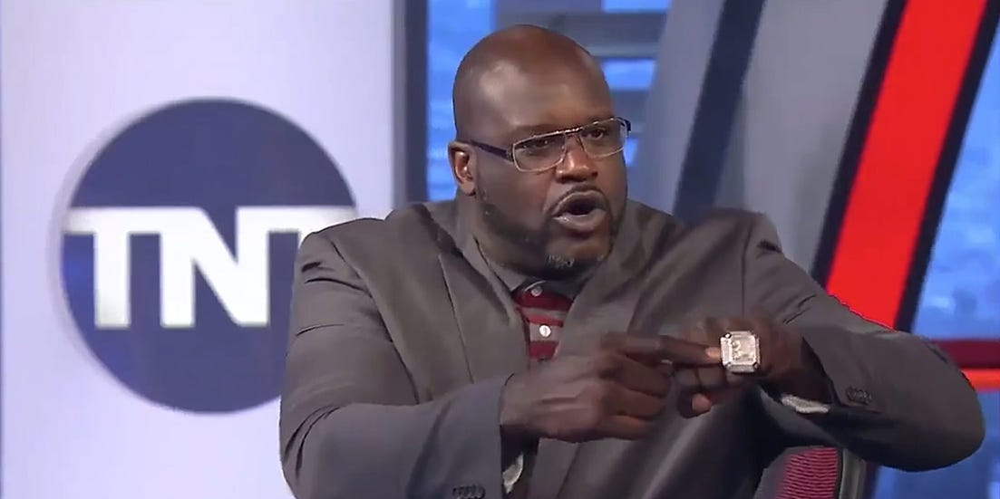

Dr. Shaquille O'Neal Ed.D.

Who is Shaquille O'Neal?

Standing at 7 feet, 1 inch tall, Shaquille O'Neal quickly became known through his stardom in the NBA. Recognized for his dominant play, yet cheery attitude, O'Neal quickly became a worldwide phenomenon. Shaquille was born in Newark, New Jersey on March 6th, 1972. He graduated from Cole High School and went on to play college basketball at Louisiana State University. Following his recent retirement from the NBA in 2011, O'Neal now works along side Charles Barkley and Ernie Johnson being an NBA analyst on "Inside the NBA".
Basketball Career
During Shaq's rookie season of NBA basketball, he went on to finish Top 10 in scoring, rebounding, blocks, and shooting percentage. However, he began to build his name as a terrible free throw shooter. O'Neal's signature move was to overpower his opponents with brute force. Shaq is most known for his career with the Los Angeles Lakers, and the seven year, $120 million dollar contract that came with that. Over that time, Shaq averaged 23 points per game and 10 rebounds. Shaq would continue to many different teams after the Lakers, before ultimately calling it quits in 2011.
Music and Acting Career
After retiring from the league, Shaquille gained more free time to spend on hobbies he enjoyed as a kid. These hobbies brought out the true entertainer in Shaq. Shaq shows off his variety of music to the public with opportunities to DJ in front of large crowds. His list of performances include Lollapalooza, Tomorrowland , Boston's Big Night Live, and Shaq's Fun House. When away from spinning the turn tables, Shaq has also engaged in a few acting roles. These roles include Blue Chips, Kazaam!, Steel, and Uncle Drew.
Inside the NBA
Inside the NBA premiered during the 1989-1990 NBA season. Then, many hosts including Craig Sager, Hannah Storm, and Vince Cellini inconsistently ran the analyst panel. It was not until the following season that Ernie Johnson Jr. joined the analyst panel as a full time host that the show began to gain following. After retiring in 2011, Shaq also joined the panel where he was joined by Charles Barkley and Kenny Smith. Today, they are one of the most watched NBA broadcasting shows. There loyal audience enjoys a great deal of comedic content including bets, jokes, and quotes such as "Gone Fishin'".